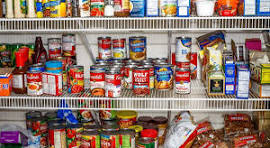
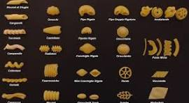
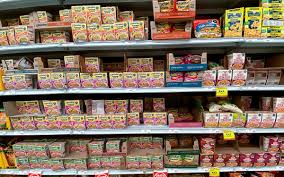
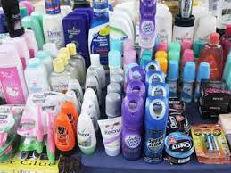
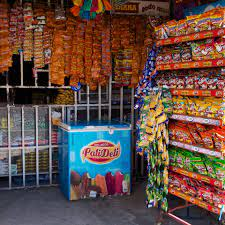

Productos de tienda
- Limpieza:
- Produtos de limpieza para el hogar, jabon en polvo, jabon en bola, azistin, cloro, jabon para trastes.
- Cocina:
- Produtos para todo aquel amante de la cocina, son: Aceite, Salsas Rancheras, Consome, Sal, Pimienta, Sal de ajo, Sal de cebolla.

- Pasta:
- Produtos de pasta para tus comidas y son: Conchitas, Rigatoni, Orzo, Coditos, Fusilli, Macaron, Espagueti.

- Sopas Instantaneas:
- Produtos para que puedas debustar a cualquier momento, son: Sopa de pollo, Sopa de res Sopa de camaron, Sopa de camaron con limon, Sopa coreana.

- Limpieza Personal:
- Produtos para tu higiene, son: Pasta de dientes, Jabon para cuerpo, Shampoo, Toallitas humedas.

- Golosinas:
- Produtos para debustar en cualquier momento, son: Tortrix de limon, Tortrix picante, Totrix de barbacoa, Señorial, Taquerito, Palitos de limon y picante, Elotito de limon, Rancheritas, Zambas.

- Verduras
- Frutas